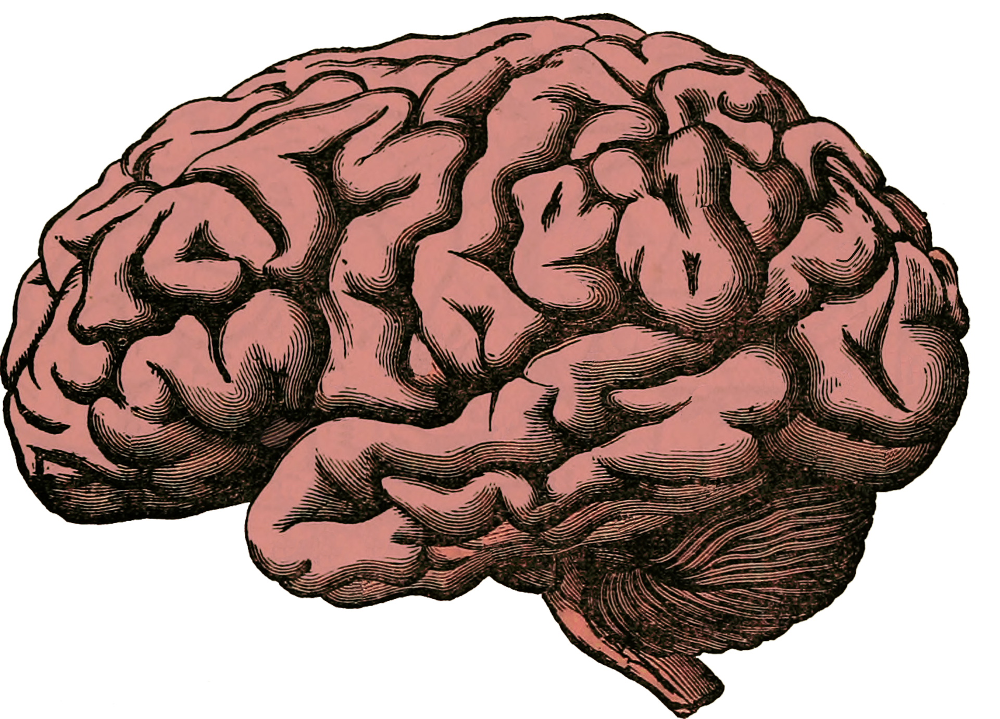

A TRIBUTE TO DEDICATION, EXCELLENCE AND INSPIRATION
Senior Registrar in Neurosurgery
Celebrating a remarkable journey in medicine, dedication to the human brain, and the inspiration to make a difference beyond the operating theatre.
BEYOND THE PROFESSION
Some people make a difference not only through what they do, but through the lives they encourage and the dreams they help nurture.
Your consistency, willingness to support my technology journey, and constant eagerness to see me learn more have meant so much to me.
Thank you for always making room for my questions, encouraging my curiosity, and reminding me that there is always something new to learn.
This little corner of the internet is my way of saying that your encouragement has not gone unnoticed.

THE SCIENCE OF THE HUMAN MIND
The human brain is one of the most extraordinary structures in the known universe.
Through billions of neurons and complex networks of connections, it coordinates our thoughts, memories, movements, emotions and experiences.
Neurosurgery represents the remarkable intersection of science, precision, courage and compassion. It is a field dedicated to understanding and protecting one of the most vital organs of the human body.
"Behind every successful procedure is a combination of knowledge, precision, patience and dedication."
The human brain contains billions of neurons.
A JOURNEY OF PURPOSE AND DEDICATION
Every great achievement begins with a journey. Behind the title is a story of learning, sacrifice, discipline and dedication.
Building the foundation of medical knowledge and developing a passion for caring for others.
Completing residency training through different surgical units, gaining valuable clinical experience, developing surgical skills and building a strong foundation for the next chapter in his medical career.
Beginning an exciting new chapter in neurosurgery, advancing his surgical knowledge, developing specialised skills and embracing the responsibilities that come with this new stage of professional growth.
Continuing to learn, grow, inspire others and make a meaningful difference in medicine.
BEYOND THE WHITE COAT
Behind every medical achievement is a mind committed to learning, discipline and continuous growth.
From his medical training and experiences across different surgical units to the beginning of his journey as a Senior Registrar in Neurosurgery, every stage represents dedication and progress.
His journey reminds us that excellence is not a destination, but a continuous commitment to becoming better and making a difference.
A COLLECTION OF KNOWLEDGE
For a mind dedicated to understanding the brain, here are two remarkable journeys through neurosurgery.
A fascinating collection of stories from the world of neurosurgery, exploring the challenges and humanity behind the operating theatre.
Read BookA deeply personal account of life as a neurosurgeon and the difficult decisions that come with caring for the human brain.
Read BookA MESSAGE FROM THE HEART
Dear Awogun Ibrahim Adekunle,
This website is more than a collection of words and information. It is a small expression of genuine appreciation for someone whose consistency and encouragement have made a difference in my journey.
Thank you for always being willing to support my technology journey, for encouraging me to learn more, and for reminding me that growth never stops.
As you continue your journey in neurosurgery, may your knowledge keep expanding, your hands remain skilled, and your impact continue to touch lives.
With sincere appreciation ❤️